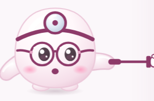

S89 · Frases sorteadas · letras no padrão de consultório · ponto próximo · luz
Esboço — nada implementado. Frases aleatórias já aprovadas; aqui está como ficam.
A · Frases sorteadas (aprovado)
‹ Início31 cm ✓
Consegue ler a frase aqui na minha frente, sem esforço?
Bom dia!
O pão está quentinho.
Feche a janela da sala.
O gato dorme no sofá.
Regue as plantas cedo.
Leve a sacola de feira.

Consigo ler
Não consigo
‹ Início29 cm ✓
Consegue ler a frase aqui na minha frente, sem esforço?
Olá, tudo bem?
A chave está na mesa.
Compre leite e pão.
A loja abre às nove.
Lave a fruta antes.
Guarde em lugar seco.
Consigo ler
Não consigo
Como funciona
• Cada uma das 9 linhas tem um banco de 12 frases (português e espanhol), todas do mesmo tamanho (± 2 letras) e com palavras do dia a dia — sem números difíceis, sem nomes.
• A cada consulta sorteia uma de cada banco, sem repetir na mesma consulta. Duas consultas seguidas quase nunca mostram o mesmo quadro.
• Quando o Mochi confere uma lente mais fraca, a última linha troca de frase — assim ninguém "lê de memória".
• O Mochi não lê a frase em voz alta (senão a pessoa só repetiria).
• O tamanho de cada linha não muda com o sorteio.
B · Letras no padrão dos cartões de leitura (sem cartão de crédito)
Hoje: as 9 linhas diminuem em passos desiguais (13% a 15%) e o tamanho real depende do celular.
Proposta: passos iguais de 26% entre uma linha e outra (o padrão "logMAR" que os oftalmologistas usam) e o tamanho de cada linha calculado em milímetros:
• distância: medida pela câmera (já temos);
• tamanho da tela: estimado pelo próprio celular (largura da tela em pixels + densidade). Celulares com a mesma largura têm telas parecidas; a margem de erro fica em torno de ±8% (menos de meio passo).
• Resultado: a mesma linha aparece do mesmo tamanho aos olhos em quase todos os celulares, e cada linha vale um grau exato da tabela.
Limite honesto: sem o cartão não dá para ter 100% do tamanho em todos os aparelhos; tablets e celulares muito diferentes continuam com um erro um pouco maior.
| Linha | Altura da letra a 30 cm | Quem para aqui costuma precisar |
|---|
| 1 | 4,4 mm | +3.00 ou mais |
| 2 | 3,5 mm | +2.50 |
| 3 | 2,8 mm | +2.00 |
| 4 | 2,2 mm | +1.75 |
| 5 | 1,7 mm | +1.50 |
| 6 | 1,4 mm | +1.25 |
| 7 | 1,1 mm | +1.00 |
| 8 | 0,9 mm | +0.75 |
| 9 (bula) | 0,7 mm | não precisa |
tabela inicial — você vai afinar amanhã com os clientes na loja (ideia 5)
C · Segunda medida: o "ponto próximo" (teste clássico de consultório)
‹ Início24 cm
Agora uma última coisa: aproxime o celular devagar e toque quando as letras começarem a embaçar.
A loja abre às nove.
aproxime devagar ↓
24 cm

Embaçou aqui
Não embaça
‹ Início
Pronto! As duas medidas combinam. 🎉
SEU GRAU
+1.50
Quadro de leitura: +1.50
Ponto próximo: +1.50 ✓ combinam
Como funciona
• Depois do quadro, o Mochi pede para aproximar o celular devagar até as letras começarem a embaçar; a câmera mede a distância nesse ponto (só vale quando a pessoa para, como no S47).
• Esse ponto mostra quanto o olho ainda consegue focar de perto. Pela conta usada em consultório, ele dá um segundo grau, sem depender do tamanho da letra nem da tela.
• Se os dois combinam (diferença de até 0,25): resultado confiável.
• Se não combinam: o Mochi pede para repetir uma vez; se continuar diferente, mostra a faixa entre os dois e "na dúvida, o menor".
• "Não embaça" (encostou quase no rosto sem embaçar) = vista boa de perto → reforça "não precisa".
• Sem câmera: essa etapa é pulada.
• Novas falas do Mochi (gravadas só depois do seu ok).
D · Conferir a luz
‹ InícioPouca luz
Está um pouquinho escuro. Vá para um lugar mais iluminado: com pouca luz a gente lê pior.
Bom dia!
O pão está quentinho.
Já melhorou
Continuar assim
Como funciona
• Antes de começar o quadro, a câmera mede o brilho do rosto (nada é gravado).
• Se estiver escuro, a etiqueta mostra "Pouca luz" e o Mochi avisa uma vez.
• Dois botões: "Já melhorou" (mede de novo) e "Continuar assim" (não trava ninguém).
• Se continuar com pouca luz, o resultado ganha uma nota: "feito com pouca luz — pode ter saído um pouco mais forte".
• Durante o teste, se a luz cair muito, só a etiqueta muda (sem interromper).